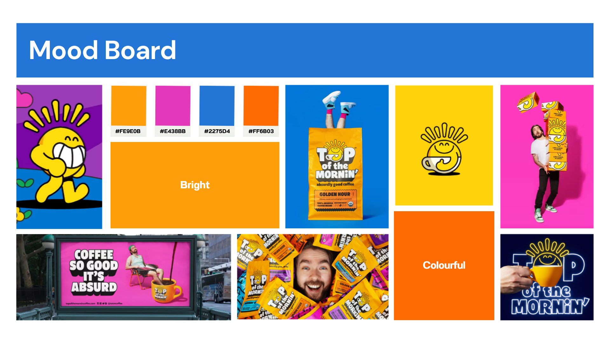
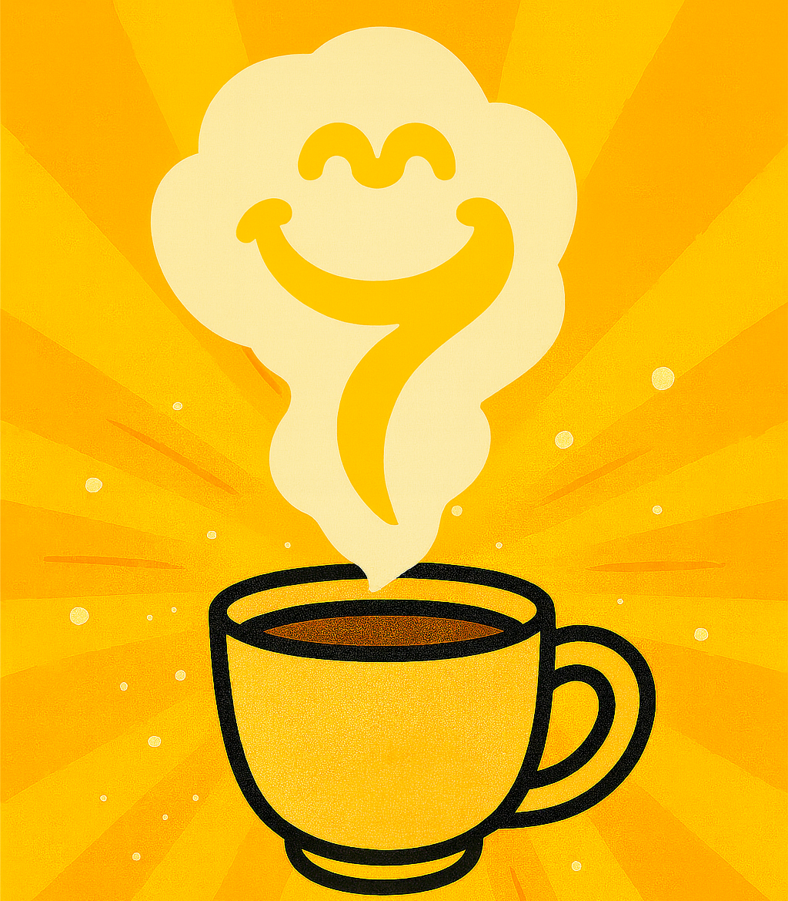
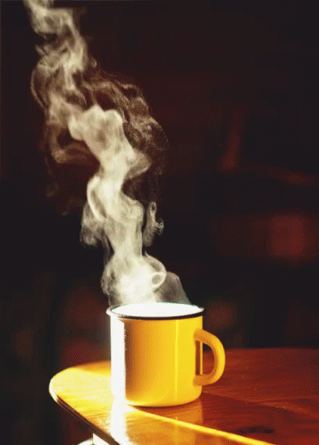
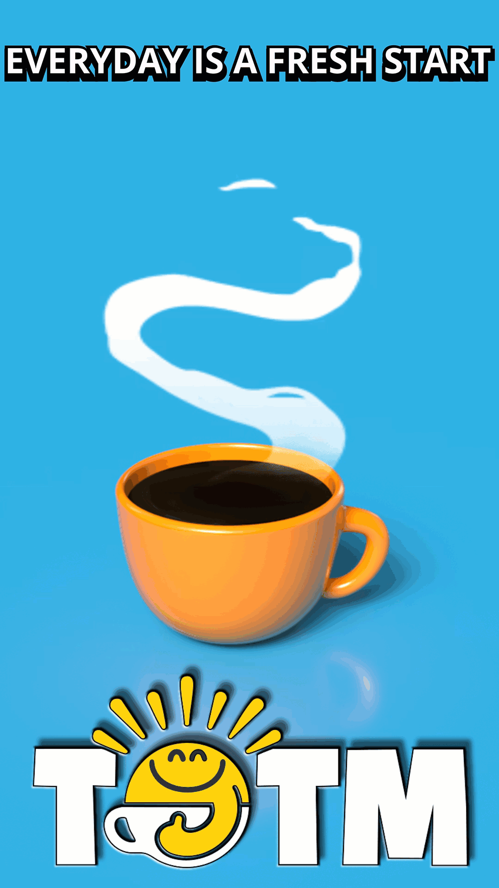

Project Overview
Top of the Mornin' Coffee needed a campaign concept for the Morning Glow roast that would feel playful, optimistic, and platform-ready. My goal was to create a short-form social media ad that used bright color, clean motion, and a recognizable brand style to increase awareness and engagement.
Visual Direction
The mood board established the campaign's saturated color palette, humor-driven tone, and playful product-centered style. It gave the project a clear visual target before moving into sketching, animation planning, and final compositing.

Early Concept Sketch
I created a rough sketch to explore the placement of the coffee cup, steam shape, campaign message, and overall visual hierarchy before moving into the final Photoshop composition.

Motion & Animation Reference
The steam reference helped guide the upward motion, softness, timing, and looping behavior of the animation. I used it to study how steam curls, fades, and rises before adapting that movement into the final animated ad.

Challenges and Solutions
Smooth Looping
Early steam tests had a visible jump, so I adjusted timing, faded opacity, and offset the start and end frames.
Brand Match
The raw 3D cup looked too realistic, so I softened highlights, reduced shadows, and corrected the color.
Color Consistency
I worked in sRGB and used clipped color adjustments to keep the saturated palette consistent.
Clean File Setup
I organized Smart Objects, masks, animated layers, and adjustment layers so the Photoshop file stayed editable.
Final Result
The finished ad uses the coffee cup as the hero object, animated steam as the main motion element, and bold typography to reinforce the "Start Fresh" campaign message.

Tools Used
Software
- Adobe Photoshop
- Adobe Substance Stager
Workflow
- Smart Objects
- Layer Masks
- Adjustment Layers
Motion
- Photoshop Timeline
- Steam Animation
- Loop Testing
Production
- 3D Rendering
- Motion Compositing
- sRGB Export